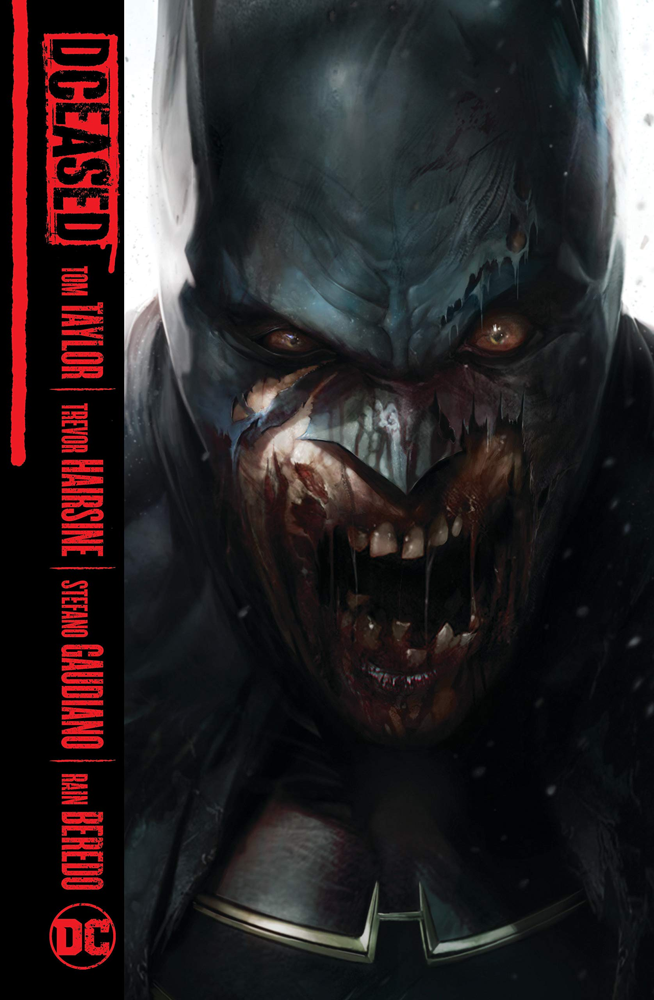
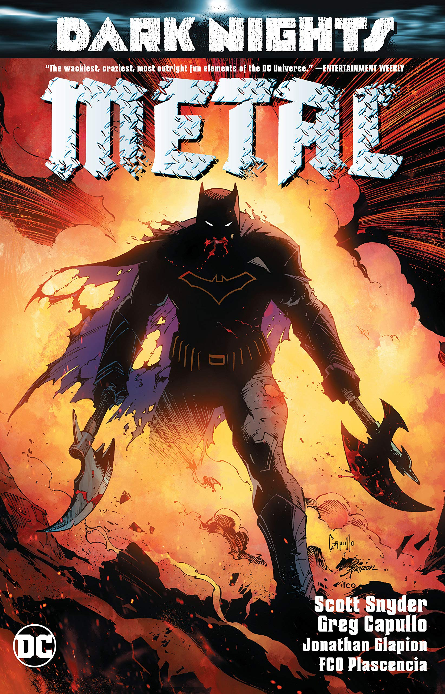

Un misterioso techno-virus ha sido liberado en la Tierra, volviendo a todos los afectados en motores violentos y monstruosos de destruccion. Nuestros heroes se encuentran desprevenidos y muchos caen bajo la influencia del virus.
Que pasa cuando un grupo de villanos manipulan a Deadpool para que se deje llevar por sus instintos asesinos y lo lleva a matar a cualquiera que se encuentre, esto incluyendo todo heroe en el universo de Marvel.
Esta historia sigue al vigilante encapuchado en su busqueda por respuestas al descubrir la existencia de un multiverso oscuro debajo del multiverso principal de DC. De este multiverso oscuro escapan siete versiones malvadas de Batman al servicio del dios Barbatos, con el proposito de desatar la misma ocuridad que plaga el multiverso oscuro en todas las otras Tierras.
